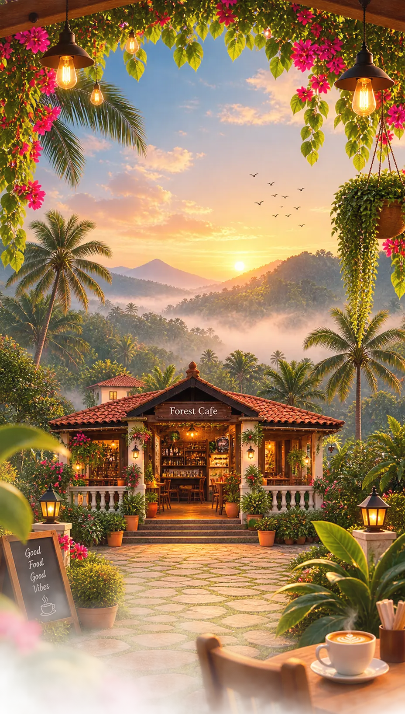

FOREST CAFE
Scroll to explore our sanctuary
Fresh Brews
Artisanal coffee brewed from fresh beans
Organic Farm
Relax in our cozy natural ambiance

Scroll to explore our sanctuary
Artisanal coffee brewed from fresh beans
Relax in our cozy natural ambiance
FROM OUR FARM
“Grown with care, made close to the earth.”
We grow and care for what we can on our own farm, keeping things simple, seasonal, and as natural as possible. From the soil to our kitchen, every ingredient carries a little piece of where we come from.
01
Farm Roast
02
House Blend
03
Signature Blend
04
Made in Small Batches
05
Freshly Baked
A small, quiet homestay just beyond the cafe grounds. Real photographs (or a 360° walkthrough) will replace this concept preview once Tiny Cot is ready to welcome guests.
Enquire for a StayAn Art Director, creative thinker and storyteller who has spent years turning ideas into visual experiences.
He has worked across films and advertising, including projects such as Jeeva and Vennila Kabadi Kuzhu, and has been part of more than 500 advertisements.
His creativity also extends beyond the screen. He has a unique ability to see possibility in old, forgotten and discarded things — transforming them into something useful, beautiful and unexpected.
Nothing is really useless. Sometimes it just needs a different imagination.
A creative space to learn, experiment and discover your own way of seeing the world through art and drawing.
Stories, ideas and observations from years of creative experience.